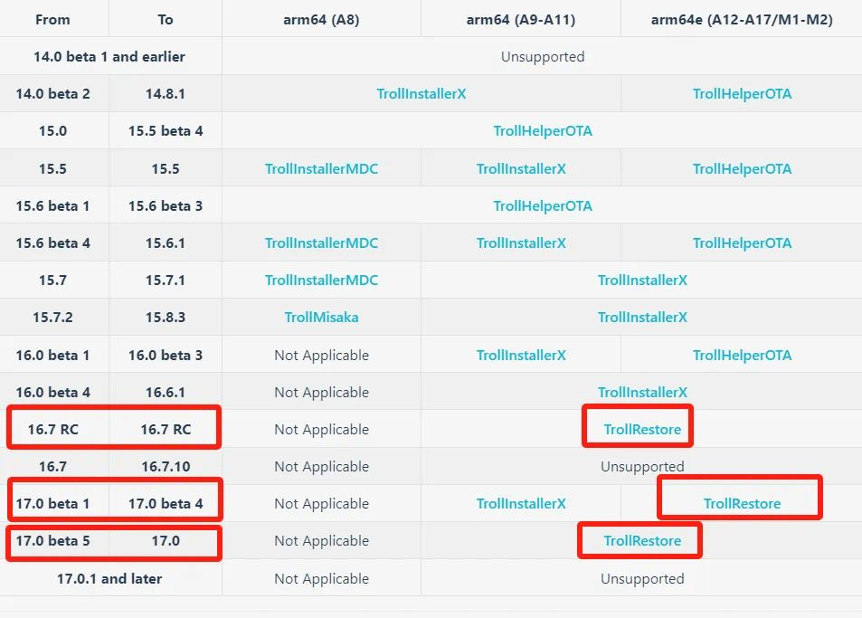
安装步骤：
一台电脑，一根数据线（确保数据线能连上），一台运行iOS/iPadOS 15.0至16.6.1、16.7 RC（20H18）或17.0的设备。
进入手机设置 → 点击顶部个人名称进入Apple ID → 查找 → 查找我的 iPhone → 关闭，不关闭会出现报错无法安装
3最新版的python3下载地址：https://www.python.org/downloads/
4最新版本的iTunes下载地址：https://www.apple.com.cn/itunes/
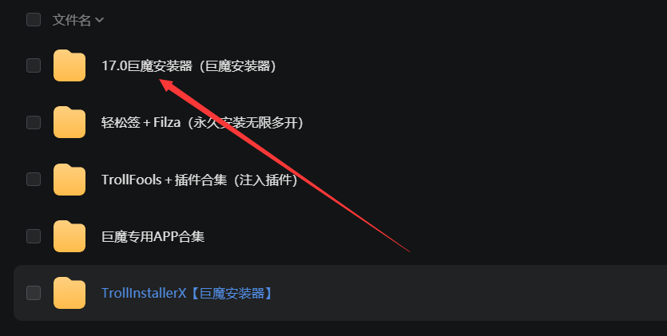
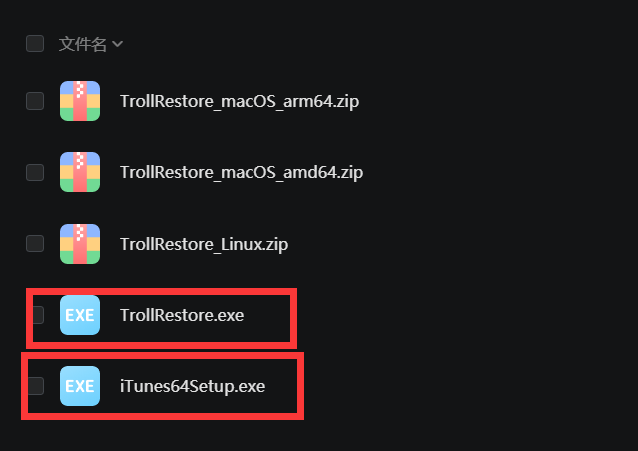
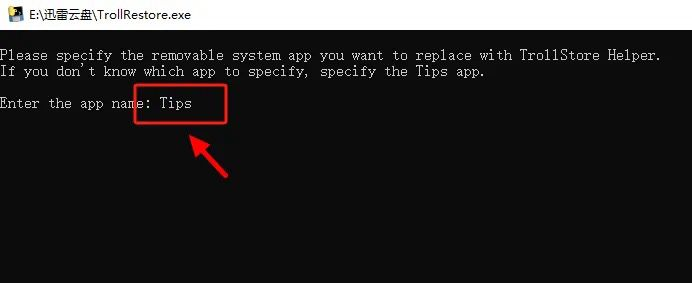
macOS界面
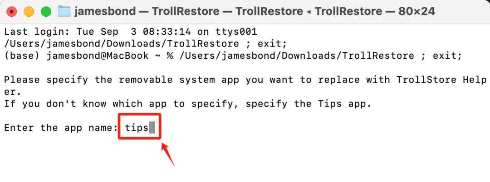
输入代码后会出现代码滚动页面，稍等片刻，如下图所
示，显示黄字+绿字说明替换成功，手机这时会自动重启。
重启后打开“提示”App，此时它已变成 TrollStore 安装器
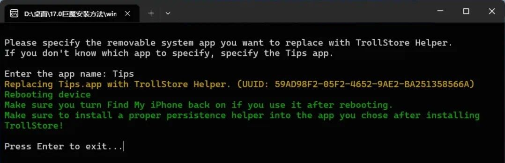
如果出现出现红字，检查是不是没有关闭查找功能，或者拔掉数据线重新插入试试，或者复制报错代码，百度搜索一下原因
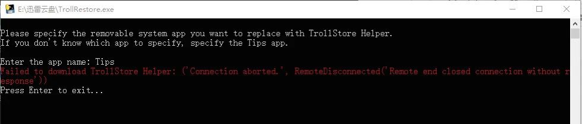
安装TrollStore完成后
1.设备重启后,解锁并打开Tips应用。
2.点击"Install TrollStore"。从这一步开始就需要用到科学上网 不懂的继续往下面看
3.等待设备再次重启（注销）,TrollStore 将完成安装
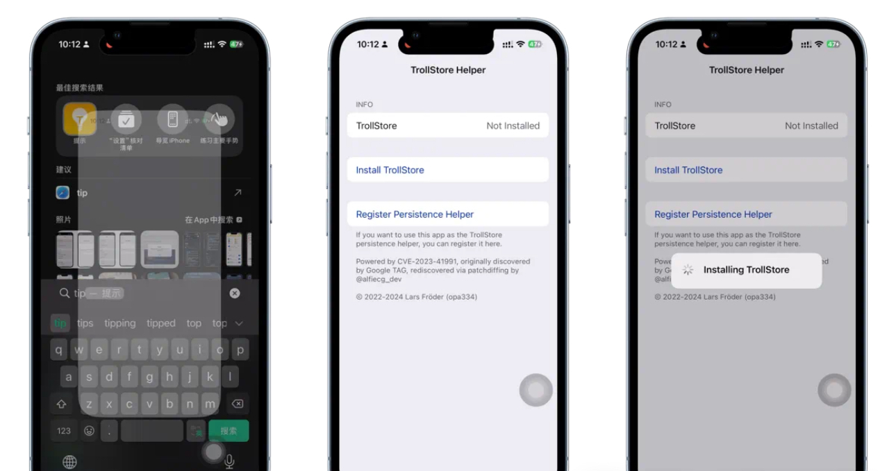
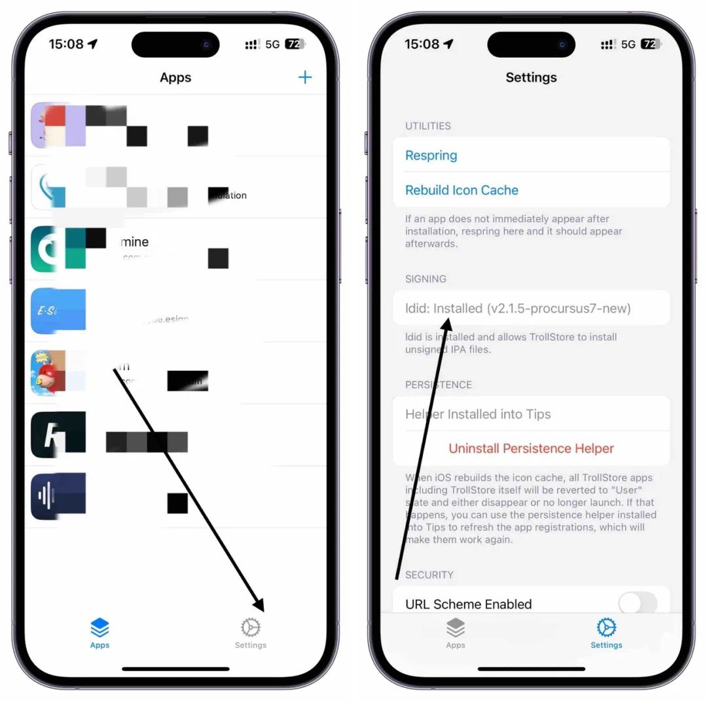
配置IDID： 安装成功后，最后一步，点击TrollStore，进入右下角设置进入，点击IDID，如果是灰色就是自动安装成功了，如果不是就需要手动点击自动安装（如安不了一直转圈圈则需要开启魔法）然后在手动安装，到这里巨魔就安装成功了✅（有此小伙伴网络好的话也可能不需要）
科学上网俗称魔法 ，苹果商店外区都可以下载 （或者小火箭,不推荐比较麻烦）最简单比如登录 美区 港区 台区 appstore商店里面都有，登录外区后 比如搜索 快连，下载免费送30分钟 ，足够时间安装巨魔IDID了等等 没有外区ID的 网站首页 有个免费外区ID 进去看 ，或者自己注册个美区ID，自行百度注册教程，不要在设置里面登录 只能在苹果商店里面登录外区ID
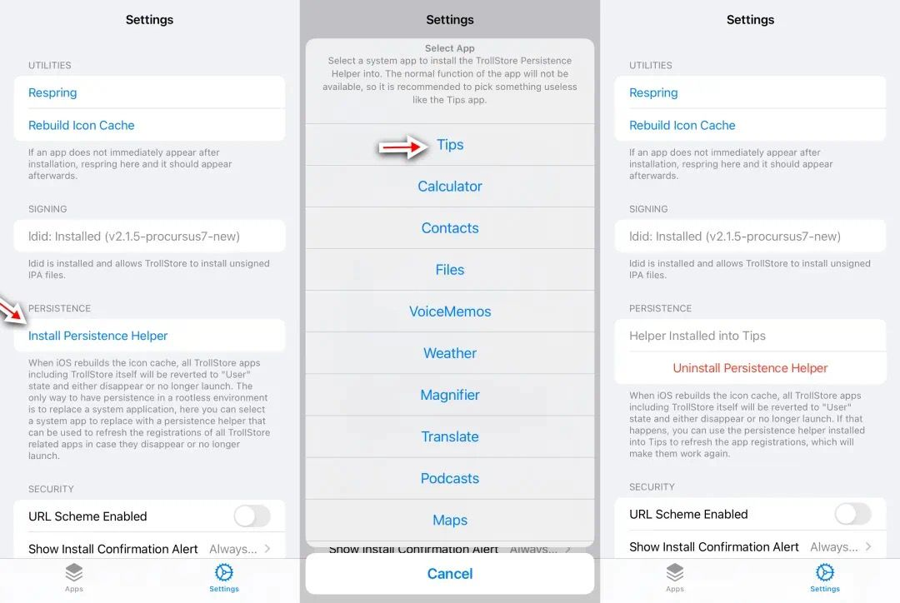
配置持久化助手，idid安装成功后，再点击Persistence ，再点Helper，选择Tips （配置持久性助手）(如果你的巨魔安装器不是提示 tips 就不要选择 tips 选择你对应的)，恭喜你成为巨魔用户
巨魔安装成功后就可以导入IPA包就是安装包，到处都有百度就有多的很，实在找不到的，上面迅雷，网盘里面准备了很多
如果是AList网盘下载——选择要下的IPA点进去-选择栏选择-Download——点下载——下载完成——打开下载的IPA——长按分享——点击TrollStore——进入巨魔——点击lnstall——安装成功——返回桌面——成功打开
如果是迅雷UC之类的网盘下载IPA，先保存到自己网盘，然后再打开自己网盘，下载刚刚保存的IPA，然后选择其他应用打开，选择TrollStore即可
AList网盘下载方式截图
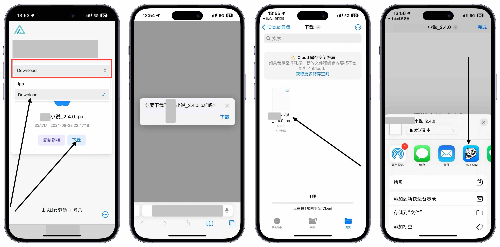
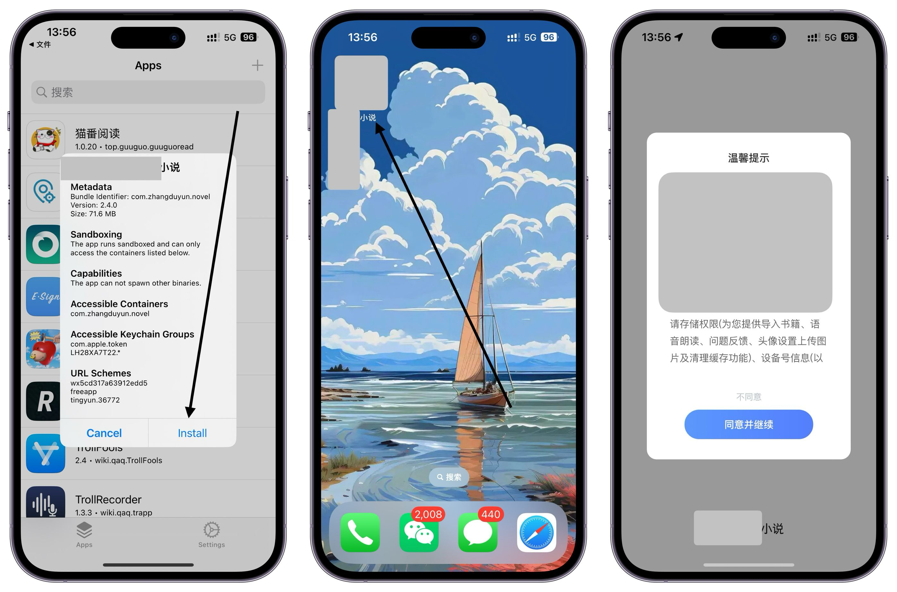
教程仅个人试验后观点，仅本人收藏存档，本人不承担任何风险